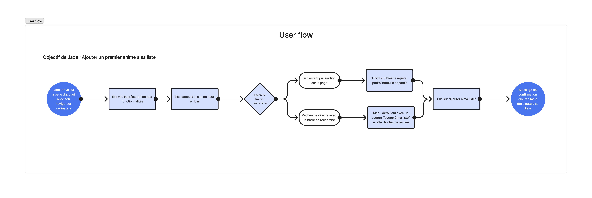

MyAnimeList : Repenser la première impression
Alléger l'interface pour guider les nouveaux utilisateurs
Contexte du projet
MyAnimeList est la plateforme de référence pour cataloguer ses animes et mangas avec plus de 13.4 millions
de
visites mensuelles depuis les moteurs de recherche.
Elle permet aux utilisateurs de :
- créer et organiser leurs listes
- suivre leur progression dans le visionnage d'anime et la lecture de mangas
- partager leur passion avec d'autres utilisateurs
MyAnimeList s'adresse à tous les passionnés d'anime et de manga, qu'ils soient débutants ou expérimentés.
Pourquoi avoir choisi MyAnimeList pour ce projet?
Au collège, je me souviens de ma propre expérience en tant que nouvelle utilisatrice. L'interface me
terrifiait. Je ne savais pas par où commencer ni où regarder. Je n'ai d'ailleurs pas tenu longtemps sur ce
site. Et maintenant que je m'intéresse de plus près à l'UX (au point d'en faire mon futur métier), j'ai
choisi de travailler sur la page d'accueil de MyAnimeList dans le cadre de ce
projet de refonte.
En y retournant des années plus tard dans le cadre de mon cours
Introduction à l'UX en Master 1, j'ai constaté que rien n'avait changé depuis tout ce temps : toujours
autant d'informations, toujours autant de publicités et aucun repère pour savoir par où commencer. J'ai donc
voulu explorer comment une meilleure hiérarchie visuelle pouvait rendre ce premier contact plus accueillant
sans perdre l'âme du site.
Et pourquoi la page d'accueil ?
La page d'accueil représente généralement le premier contact entre l'utilisateur et
l'interface, la porte d'entrée vers un service ou un produit.
Elle a pour but de présenter son identité visuelle, donner un avant-goût de
l'expérience et présenter les fonctionnalités à l'utilisateur.
Le guidage est donc une part extrêmement importante à prendre en compte lors de
la conception de la page d'accueil puisqu'il permet à l'utilisateur de se repérer, de
comprendre le fonctionnement de l'interface et les actions qu'il peut effectuer.
Comment alléger la page d'accueil de MyAnimeList et mieux guider le regard pour aider un nouvel utilisateur à ajouter son premier anime sans se sentir dépassé ?
Les étapes du projet
01
Analyser le site et identifier les points de douleur
Analyse comparative avec AniList pour identifier les points de douleur et les opportunités d'amélioration.
02
Réaliser un persona et une Experience Map
Création du profil de Jade, collégienne de 14 ans qui découvre MyAnimeList pour la première fois et de sa carte d'expérience pour identifier les blocages dans son parcours.
03
Concevoir un parcours utilisateur / étape idéation
Définition d'un user flow pour guider Jade dans l'ajout de son premier anime.
04
Concevoir la maquette
Refonte de la page d'accueil sur Figma à l'aide de tous les éléments précédemment définis.
Analyser le site et identifier les points de douleur
Analyse comparative entre MyAnimeList et AniList
MyAnimeList permet aux passionnés comme aux débutants d'organiser leurs listes d'animes et de mangas, de suivre leur progression et d'échanger avec la communauté. Avant d'analyser son interface, j'ai voulu vérifier si sa densité visuelle était la norme sur ce marché en comparant son trafic mensuel issu des moteurs de recherche à celui de ses principaux concurrents (Semrush, nov. 2026). Le constat est sans appel, MyAnimeList domine largement le secteur avec 13,4 millions de visites mensuelles, loin devant Anime-Planet (1,5 million), AniList (455 700) et MangaUpdates (391 300).
Trafic mensuel estimé sur les moteurs de recherche
Source : Analyse sur Semrush (nov. 2026)
Pourtant, cette position de leader contraste avec l'expérience proposée dès la page d'accueil. En mettant côte à côte MyAnimeList et AniList, plusieurs points de douleur ressortent nettement :
Page d'accueil de MyAnimeList
En parcourant la page, on constate :
- Présence de la pub trop envahissante
- Bandeau de notification qui détourne l'attention de la navigation secondaire
- Barre de recherche difficile à repérer
- Typographie de petite taille (10 px à 16 px)
- Boutons « Add » peu visibles
- Manque de hiérarchie visuelle : le regard ne sait pas où se poser
- Page trop textuelle
- Des sections difficiles à distinguer
- Surcharge cognitive due à l'accumulation d'éléments sur la page
Page d'accueil d'AniList
Points positifs :
- Une hero section dédiée à la présentation des fonctionnalités.
- Une mise en page aérée qui facilite la lecture.
- Hiérarchie typographique qui facilite le repérage des informations.
- Une barre de filtres pour faciliter la recherche.
- Une homogénéité de la taille des images pour garder une cohérence.
- Une limitation dans le nombre d'éléments visibles sur la page pour limiter la surcharge cognitive.
Mes objectifs de refonte
Bien que la richesse de contenus et de fonctionnalités en fasse sa force, la lisibilité ne doit pas
être sacrifiée pour autant.
Pour cette refonte, je me suis donc fixée 3 objectifs à prioriser :
- Alléger l'interface
- Faciliter la découverte
- Améliorer la lisibilité
Cependant, avant de pouvoir envisager des améliorations, il est tout d'abord nécessaire de comprendre les besoins et les attentes des utilisateurs.
Réaliser un persona et une Experience Map
Pour ancrer la refonte dans des besoins concrets, j'ai conçu le persona de Jade Lefebvre, une collégienne débutante qui souhaite découvrir les animes pour partager cette passion avec son groupe d'amis. Ensuite, j'ai cartographié sa toute première visite sur la plateforme.
Le persona : Jade Lefebvre
![Fiche persona de Jade Lefebvre, 14 ans, collégienne en 3e. Histoire : passionnée de cinéma et de séries, elle veut se mettre aux animes comme son groupe d'amis. Verbatims : « Mon groupe est à fond anime/manga donc j'aimerai bien m'y mettre aussi » et « Je me décourage trop facilement à chaque fois. Je ne sais pas où regarder… ». Besoins : noter les animes à regarder, suivre sa progression, découvrir de nouveaux titres. Pain points : interface trop complexe et fatigante visuellement, manque d'attrait. Sites et apps préférés : Letterboxd, Instagram, TikTok, TV Time. Solutions identifiées : rendre l'interface très visuelle et claire, guider l'utilisateur.](photos_webp/mal_persona.webp)
Experience Map de la première visite sur MyAnimeList
![Experience Map du parcours de Jade Lefebvre lors de sa première visite sur MyAnimeList en 4 étapes : 1. Elle arrive sur la page d'accueil (désorientée face au trop-plein d'informations : « Par où je commence ? »). 2. Elle parcourt les rubriques et affiches (surchargée par la densité du contenu : « Il y a tellement de choses, je ne sais pas où regarder »). 3. Elle cherche à comprendre comment utiliser le site (confuse par l'absence de guidage : « Comment ça marche ? Comment je crée une liste ? »). 4. Elle finit par trouver un titre qui l'intéresse malgré les contenus noyés dans la masse (enthousiaste : « Oh ! Cet anime a l'air sympa ! »).](photos_webp/mal_experience_map.webp)
Concevoir un parcours utilisateur / étape idéation
À partir des points de douleur identifiés sur l'Experience Map de Jade, j'ai tracé un parcours permettant d'ajouter un premier anime à sa liste sans se sentir perdue. L'interface s'adapte à deux manières de naviguer dès la page d'accueil. Elle peut soit découvrir une oeuvre visuellement en naviguant dans les sections de la page, soit rechercher directement un anime grâce à la barre de recherche.

Concevoir la maquette
En passant sur Figma, j'ai gardé l'identité visuelle de MyAnimeList tout en repartant sur une grille de douze colonnes pour mieux répartir l'espace.
Tout en haut, j'ai remonté la barre de recherche et déplacé le menu au-dessus de la publicité, avec des petites flèches pour indiquer les sous-menus, afin que la navigation soit plus claire. J'ai aussi remplacé les nombreuses pubs sur les côtés par une seule bannière pour que l'on se sente moins agressé dès l'arrivée sur le site. Juste en dessous, j'ai ajouté un bloc d'accueil qui présente les fonctionnalités principales avec un bouton "Create my list".
Pour le reste de la page, j'ai agrandi les textes (16 px pour le corps et 24 px pour les titres), limité chaque section à six affiches homogènes et transformé les articles de news et reviews en cartes visuelles plus aérées pour casser l'aspect trop textuel du site.
Ce que j'ai appris
C'était mon vrai premier projet complet d'UX Design ! Il m'a permis de comprendre qu'il ne faut pas se
précipiter sur Figma pour concevoir une solution mais plutôt prendre le temps de comprendre le problème
avant de se lancer dans la conception. Puisque nous, designers, créons des interfaces pour des
utilisateurs, il est essentiel de bien comprendre leurs besoins et leurs usages. La prochaine étape de
ce projet serait de faire des tests pour observer comment les utilisateurs interagissent avec
la nouvelle interface et si elle répond bien à leurs attentes.
De plus, dans un autre module intitulé
Recherche UX et SHS, j'apprends actuellement de nombreuses méthodes pour mener des recherches
utilisateurs efficaces (entretiens, questionnaires, observation, quand faire du quantitatif et du
qualitatif, etc.). J'ai hâte de pouvoir combiner toutes ces connaissances dans de futurs projets
concrets.